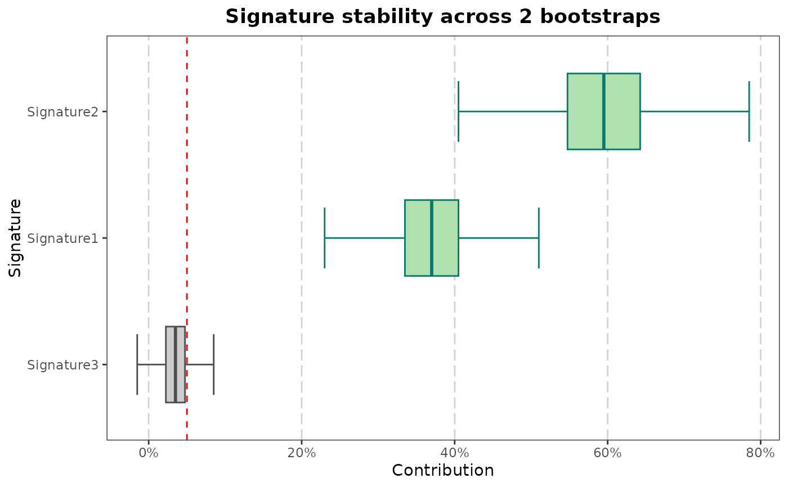

Visualize Bootstrap Contributions for Signatures
Source:R/sig_visualise_bootstraps.R
sig_visualise_bootstraps.RdThis function takes a dataframe of bootstrap contributions for signatures and visualizes them using boxplots. It highlights significant contributions based on a p-value threshold and a minimum contribution threshold.
Arguments
- bootstraps
A dataframe in sigverse style describing bootstraps. See
sigshared::example_bootstraps().- min_contribution_threshold
Numeric value representing the minimum contribution threshold to consider (default is 0.05). See threshold argument of
sigstats::sig_compute_experimental_p_value().- pvalue
The p-value threshold for significance (default is 0.05). P values are computed using
sigstats::sig_compute_experimental_p_value()
Examples
library(sigshared)
sig_visualise_bootstraps(example_bootstraps())
